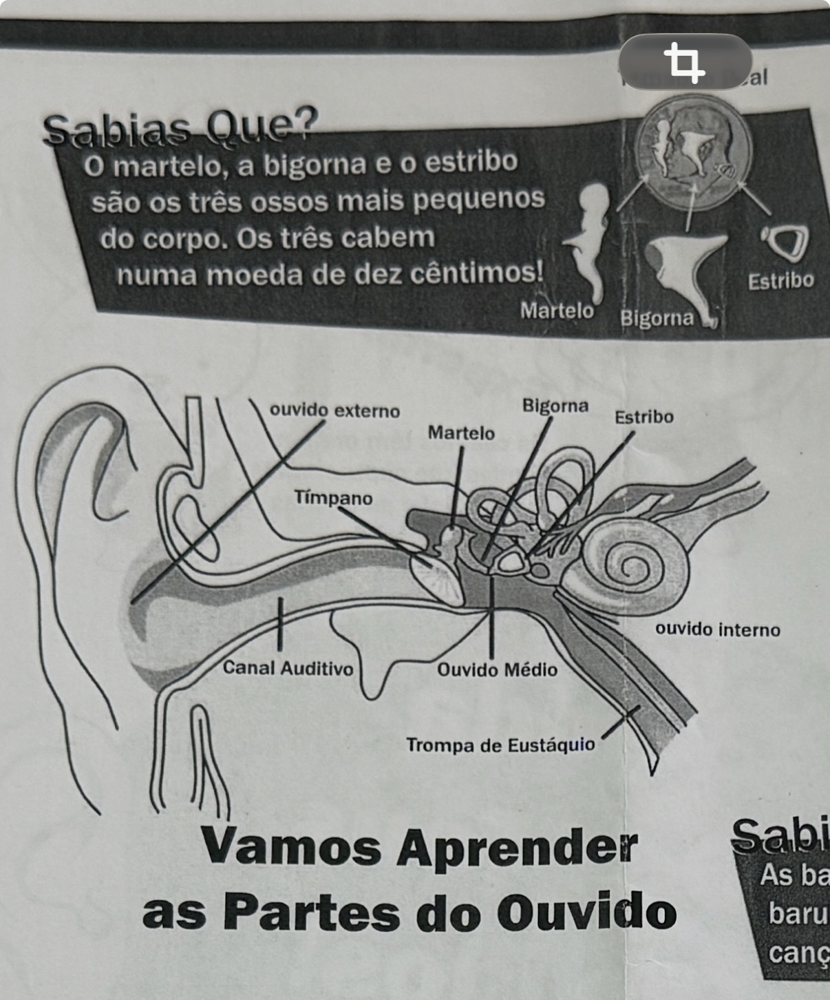
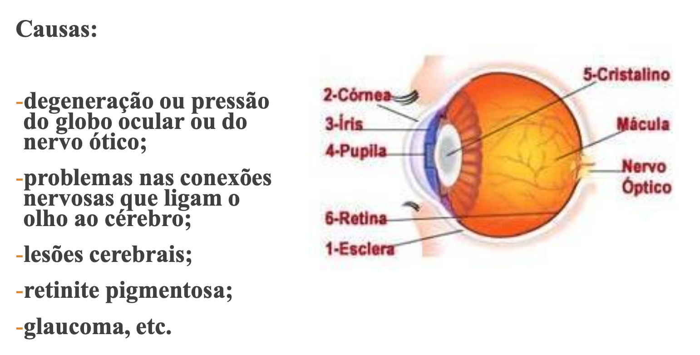

1. A perda auditiva mista ocorre quando:
2. O Braille é um sistema de pontos em relevo lidos pelo tato.
3. Apenas os alunos com __________ necessitam de aprender LGP como língua primeira.
4. Na anatomia do ouvido, a estrutura que separa o canal auditivo do ouvido médio é:

5. A PDL é uma condição não __________.
6. Qual é a opção correta sobre Português Língua Não Materna (PLNM)?
7. A perda auditiva que afeta o ouvido interno ou nervo auditivo é __________.
8. Na TVA, uma dificuldade frequente é:
9. Qual das opções apresenta métodos adequados para educação de alunos com deficiência auditiva?
10. Na anatomia do olho, o nervo ótico tem como função principal:

11. PDL significa Perturbação do Desenvolvimento da __________.
12. No DUA, o princípio associado ao “como” da aprendizagem é:
13. A surdo-cegueira associa limitações auditivas e visuais.
14. A perda neurossensorial localiza-se no ouvido interno, nervo auditivo ou vias auditivas centrais.
15. A leitura labial, a oralidade, a LGP e a comunicação total podem ser métodos de apoio na deficiência auditiva.
16. A PDL pode ser diagnosticada desde os 3 anos de idade até à idade adulta.
17. Entre as causas de deficiência visual referidas encontram-se:
18. O Plano Individual de Transição abrevia-se __________.
19. Para que as intervenções na PDL sejam eficazes devem ser:
20. A prevalência da PDL é superior no género feminino.
21. Na deficiência visual, que métodos podem ser implementados numa educação apropriada?
22. A baixa visão caracteriza-se por:
23. A surdez e a surdo-cegueira são conceitos equivalentes?
24. Os problemas visuais diagnosticados podem incluir cegueira e baixa __________.
25. Na educação de alunos com surdez, a língua gestual portuguesa abrevia-se __________.
26. Uma dificuldade de compreensão leitora em alunos com PDL pode ser mal interpretada como:
27. A perda auditiva que afeta o ouvido interno ou o nervo auditivo é:
28. A retina é uma estrutura do ouvido médio.
29. A cóclea pertence ao ouvido externo.
30. O apoio de terapeutas da fala e __________ pode fazer a diferença na PDL.
31. O PIT é obrigatório, em regra, para alunos com adaptações curriculares significativas:
32. Martelo, bigorna e estribo são ossículos do ouvido médio.
33. A comunidade de etnia __________ pode enfrentar barreiras culturais ou históricas ao sucesso escolar.
34. Alunos de Português Língua Não Materna podem precisar de suporte __________ para aceder ao currículo.
35. O PEI é particularmente necessário quando existem:
36. O DL 54/2018 organiza medidas universais, seletivas e __________.
37. Qual das opções NÃO é um sinal típico de alerta para PDL?
38. A PDL afeta aproximadamente 1 em cada __________ crianças.
39. A perda auditiva que compromete a transmissão das vibrações acústicas até ao ouvido interno é:
40. No DUA, o “como” da aprendizagem corresponde à ação e __________.
41. Todos os alunos com deficiência auditiva precisam de aprender LGP?
42. Os problemas auditivos que podem ser diagnosticados são surdez e __________.
43. Sobre a causa da PDL, a afirmação mais correta é:
44. Apenas os alunos com __________ precisam de aprender o Sistema Braille.
45. A PDL pode estar associada a:
46. A perda condutiva compromete a transmissão das vibrações acústicas para o ouvido interno.
47. A PDL ocorre quando:
48. Todos os alunos com deficiência visual precisam de aprender Braille?
49. Na deficiência visual, os problemas visuais diagnosticados podem incluir:
50. Qual é a opção mais rigorosa sobre comunidades específicas no contexto inclusivo?